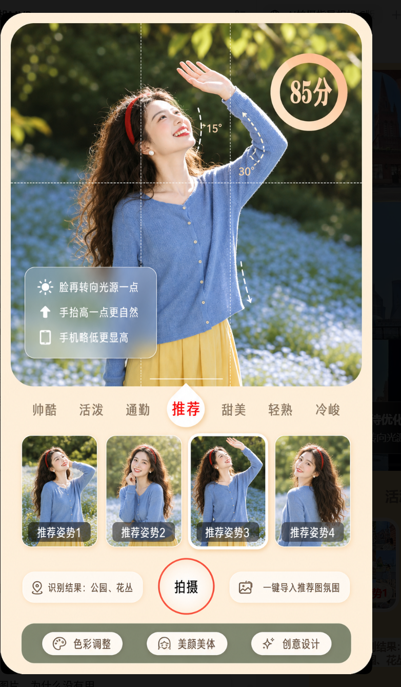
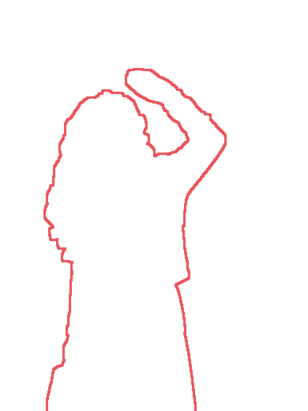

85
分
×
☀
脸再转向光源一点
⬆
手机略低一点，脚靠近画面底部更显高。
▯
对齐红色轮廓调整肩膀和手臂
×
辅助
帅酷
活泼
通勤
推荐
甜美
轻熟
优雅
推荐姿势1
推荐姿势2
推荐姿势3
推荐姿势4
姿势库
女性 · 单人
模特透明度
模特透明
20%
边框透明
70%
人群
孩童
女性
男性
多人
类型
单人
情侣
闺蜜
亲子
朋友
色彩调整
美颜美体
创意设计
美颜美体
关闭
已更新推荐